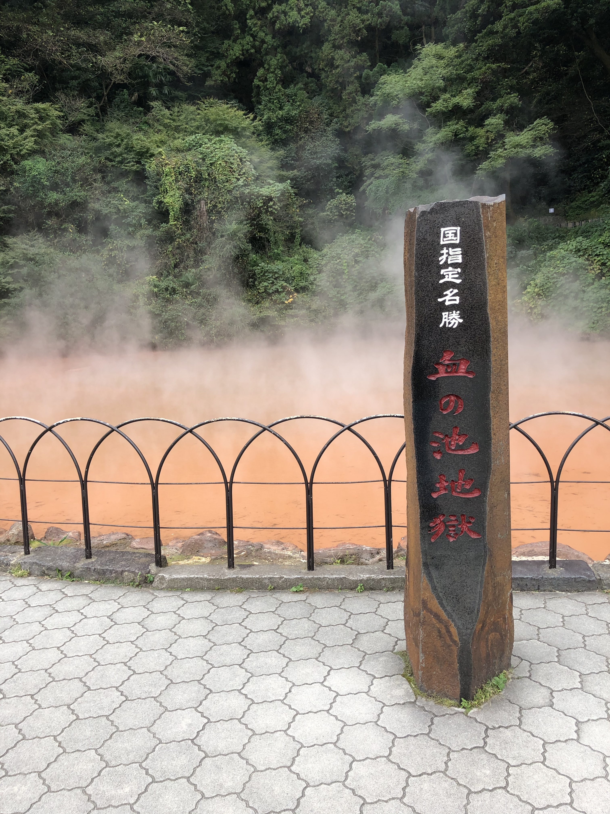
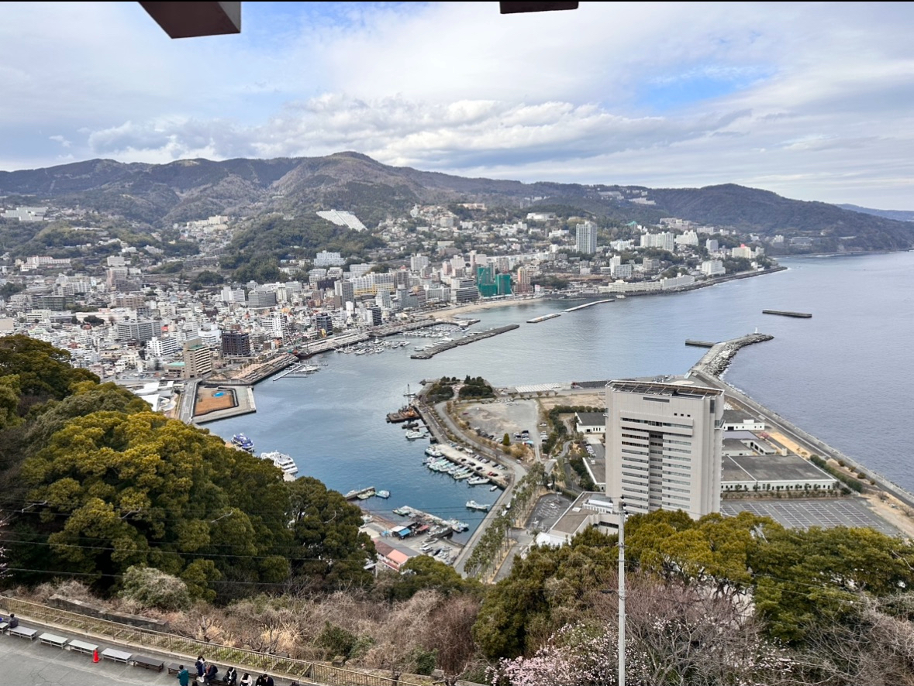
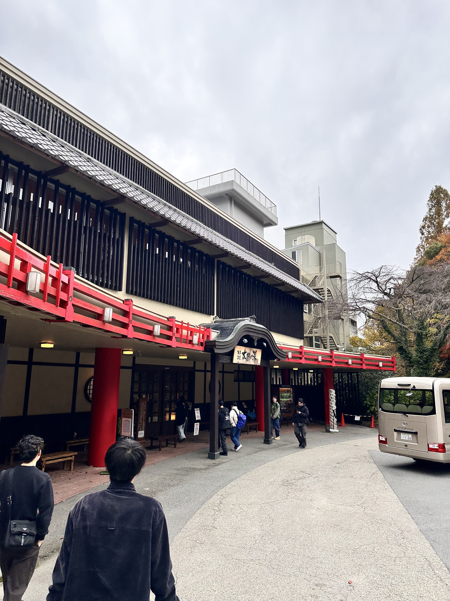
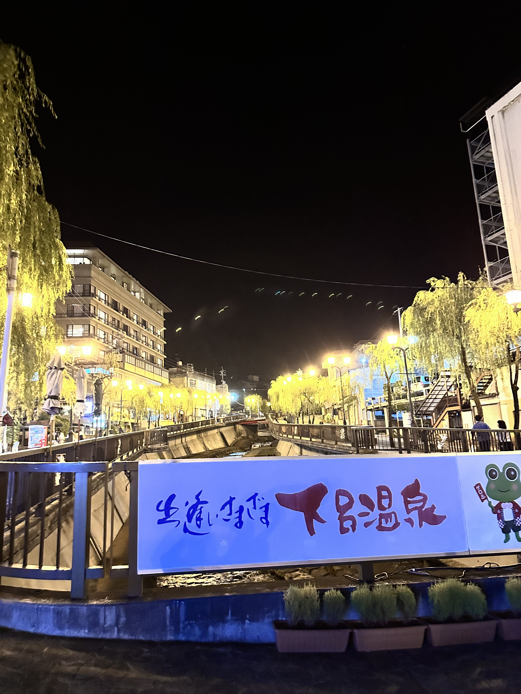

Hot spring
温泉に入るのが大好きです。普段からスーパー銭湯やローカル銭湯にはよく行きますが、最近は毎年必ず温泉地に旅行に行くほど温泉旅行が好きです。今年は草津温泉に行くことができ日本三名泉を制覇することができました。このページでは私が今まで訪れた温泉地を紹介します。
次は愛媛県の道後温泉、北海道の登別温泉、山形県の銀山温泉あたりに行けたらいいなと思っています。
右の写真は大分県にある別府温泉です。

温泉に入るのが大好きです。普段からスーパー銭湯やローカル銭湯にはよく行きますが、最近は毎年必ず温泉地に旅行に行くほど温泉旅行が好きです。今年は草津温泉に行くことができ日本三名泉を制覇することができました。このページでは私が今まで訪れた温泉地を紹介します。
次は愛媛県の道後温泉、北海道の登別温泉、山形県の銀山温泉あたりに行けたらいいなと思っています。
右の写真は大分県にある別府温泉です。

静岡県にある熱海温泉です。熱海駅を出るとすぐに商店街が広がっていました。海沿いの県ということもあり海鮮がとても美味しかったです。

兵庫県にある有馬温泉は日本三名泉の一つであり、豊富秀吉が愛した温泉として知られています。京都に住んでいる私にとって近場にこの規模の温泉街があるのはとても嬉しく思います。

岐阜県にある下呂温泉は有馬温泉と同じく日本三名泉の一つに数えられます。岐阜県の飛騨高山に旅行しに行った時に道中にあったので行きました。温泉街のお湯の香りがとても良かった印象があります。旅行のついでで行ったので次はここをメインに来たいです。

群馬県にある草津温泉は日本三名泉の一つであり、日本で最も有名な温泉地だと思います。実際に私が行ったときも、日本人から外国人観光客までとても賑わっていました。温泉街が強い硫黄の匂いであったこととお湯が緑色だったのが非常に印象的でした。
愛媛県にある道後温泉は日本でも有名な温泉街です。京都から車で5時間ほどかけて行きました。私が行った中でもトップクラスに雰囲気が良い温泉街でした。